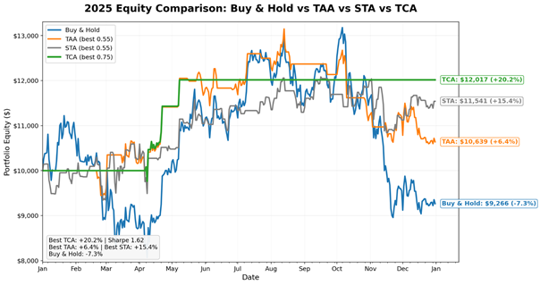
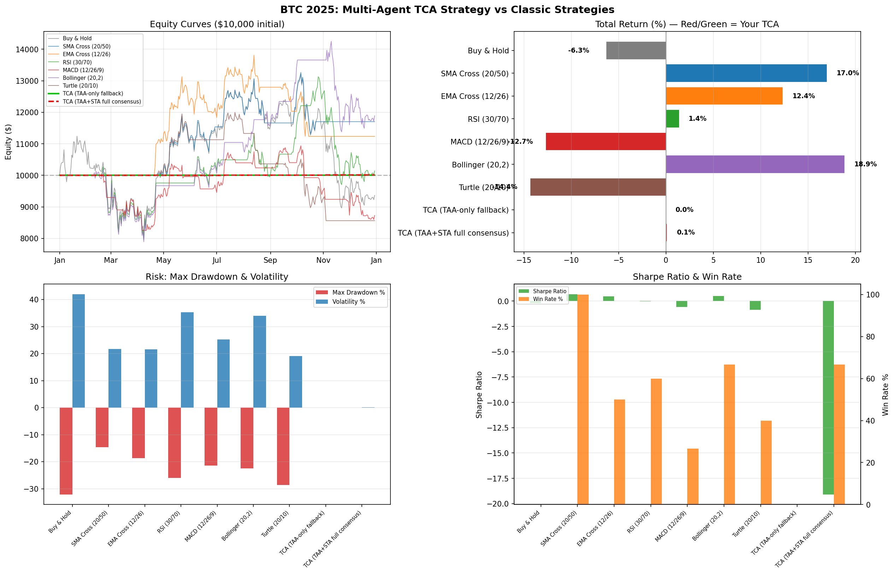
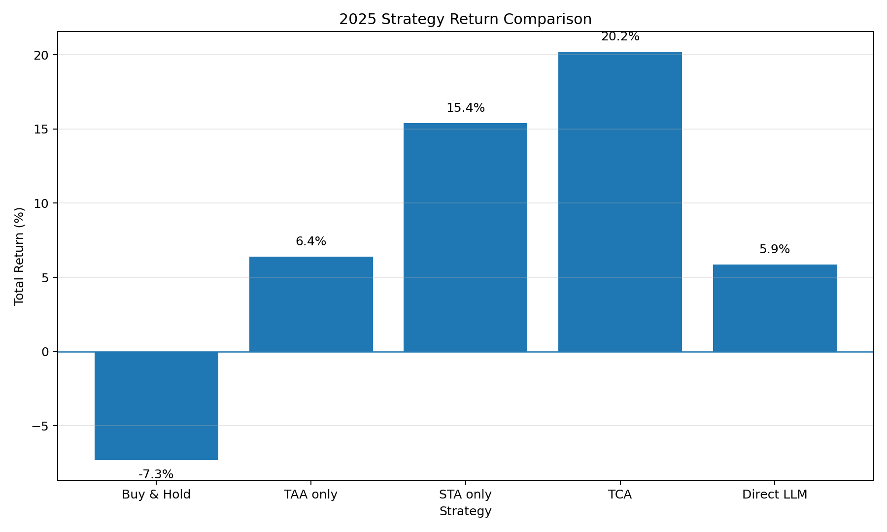
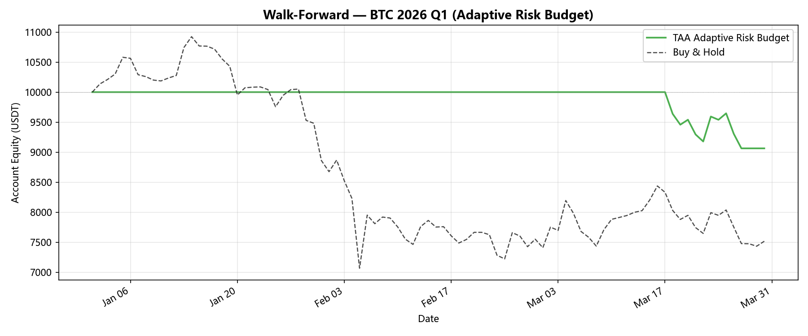
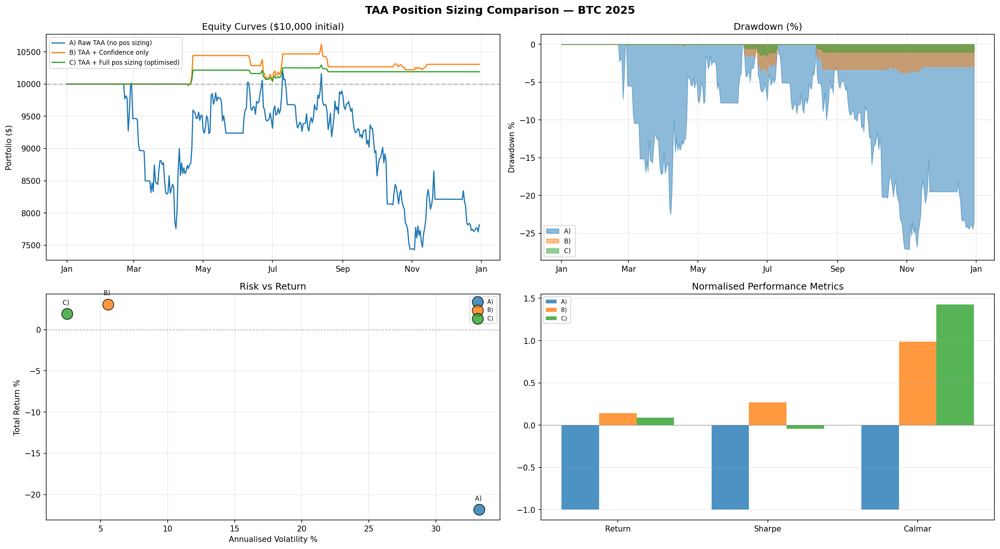

HKU MSc(CompSc) · Financial Computing · Capstone Project
Real-time Financial Sentiment Analysis & Trading Decision System
A modular multi-agent AI system that turns live market data, technical indicators, and sentiment signals into explainable BTC buy / sell / hold recommendations within a target of under 15 seconds — with full audit trail and paper execution.
Overview
Cryptocurrency markets run 24/7 and produce dense, multi-source signals. Existing approaches tend toward either opaque end-to-end models or brittle fixed rules. This project delivers a production-style decision-support prototype that is fast, modular, and auditable: every recommendation can be traced back to the market snapshot, technical signal, and sentiment reading that produced it.
Aim
Design, implement, and evaluate a collaborative agent architecture for BTC/USDT on Binance that ingests live market data, technical analysis, and news/social sentiment, then fuses them into a final trade recommendation with confidence scores and a full audit trail. Scope is deliberately limited to BTC/USDT spot and paper trading only — no real funds are placed at risk.
Problem & gap
Prior work falls into rule-based systems (interpretable but brittle under regime change), single-model ML/RL approaches (strong pattern recognition but opaque), and sentiment-augmented predictors. There is limited work that combines real-time multi-source ingestion, specialised reasoning agents, and an explicit consensus layer with risk management in one deployable system. This project fills that gap.
-
O1
Architecture & infrastructure
Containerised Redis message-bus runtime with PostgreSQL audit logging, paper execution, and an operator dashboard.
-
O2
Specialised agents
MDA, TAA, STA, and TCA with documented input/output contracts and parallel team development.
-
O3
Evaluation framework
Shared backtest harness for baselines, individual-agent ablations, and integrated multi-agent runs under identical fees and metrics.
-
O4
Honest comparison
Results positioned against naïve rules, classical TA, multi-year baselines, and a direct local-LLM decision baseline.
-
O5
Operational demonstration
Live paper-trading dashboard showing decisions, risk-gate outcomes, paired PnL, and portfolio equity.
Performance targets vs outcomes
- End-to-end latency
- < 15 s · met
- Sharpe ratio (TCA 2025)
- 1.62 · target > 1.5
- Max drawdown (TCA 2025)
- −3.15% · target < 20%
- Total return (TCA 2025)
- +20.2% vs B&H −7.3%

Team
Four students developed specialised agents in parallel against shared Pydantic contracts, with a single mentor providing academic guidance. Parallel development was a design goal: no agent imports another; all communication goes through Redis and validated schemas.
Mentor — Ka-Ho Chow
-
LAM Wai Chiu
Leader · Trade Coordinator Agent (TCA)
UID 3036380999
Weighted consensus & risk logic, system integration, project management, final decision audit trail
-
YUEN Wai Yin
Technical Analyst Agent (TAA)
UID 3036411906
Indicator pipeline, regime classification (trend / range), multi-year TA backtesting vs classical baselines
-
FUNG Wai Ho
Sentiment Tracker Agent (STA)
UID 3036197433
NLP pipeline (FinBERT), news/social ingestion (X, Reddit, Tavily), sentiment backtests
-
FAN Man Fei
Market Data Agent (MDA)
UID 3035585413
Live Binance ingestion, Redis/PostgreSQL infrastructure, FastAPI backend & React dashboard
Architecture
Five design principles guide the system: specialisation over generality, audit by construction, decoupling through a message bus, determinism in the decision layer, and parallel development against shared contracts.

Core agents
-
MDA — Market Data Agent
Subscribes to Binance WebSocket streams (kline, aggTrade, miniTicker) with REST fallback. Emits structured
MarketSnapshotmessages every ~3 seconds, including price, OHLCV, short-horizon returns, and trigger events (price breakout / drop, volume spike). -
TAA — Technical Analyst Agent
Maintains a rolling OHLCV buffer and computes EMA, RSI, MACD, Bollinger Bands, ATR, and ADX. Classifies regime as TREND_UP / TREND_DOWN / RANGE, then runs either a trend-following voting composite or a gated mean-reversion path. Publishes BUY / SELL / HOLD with confidence, position size, and ATR-based risk levels.
-
STA — Sentiment Tracker Agent
Aggregates X/Twitter, Reddit, and Tavily news; scores items with FinBERT (lexicon fallback for CI); applies source-credibility and keyword adjustments; outputs a unified sentiment score on a −10…+10 scale with source breakdown and catalysts.
-
TCA — Trade Coordinator Agent
Applies freshness checks, confidence floors, conflict handling, and a default 60/40 TAA/STA weighted consensus. Emits a final trade signal with rationale and a
decision_rulesaudit array. Pure decision logic is separated from the Redis runtime so it can be unit-tested without infrastructure. -
OCA — On-Chain Analyst Agent (extension)
Beyond the original four-agent scope. Uses free Coin Metrics community data (active-address and transaction-count momentum) as a slower regime signal. Validated in multi-year standalone backtest; recommended integration pattern is as a position-sizing regime gate rather than a directional voter.
Message bus
| Channel | Publisher | Subscribers |
|---|---|---|
market.snapshots |
MDA | TAA, STA, TCA |
signals.technical |
TAA | TCA |
signals.sentiment |
STA | TCA |
signals.trade |
TCA | Logger, Execution, Dashboard |
Product layer
A contract/adapter layer normalises schemas between agents. An event logger persists every
message to PostgreSQL with event_id, correlation_id, and
source_event_ids for end-to-end traceability. A risk gate and paper broker simulate
fills; FastAPI exposes decisions, orders, fills, and equity; a React dashboard presents the
live operations view.

Stack: Python 3.11 · Redis Pub/Sub · PostgreSQL 16 · Pydantic v2 · FastAPI · React · Docker Compose · FinBERT · Binance API
Milestone
All planned milestones from the detailed proposal through final delivery have been completed.
- Weeks 1–2 Topic finalisation and literature review Completed
- Weeks 2–4 Data sources, Redis/PostgreSQL infrastructure, MDA pipeline Completed
- Weeks 4–7 Technical Analyst Agent (TAA) and classical TA baselines Completed
- Weeks 6–8 Sentiment Tracker Agent (STA) and FinBERT pipeline Completed
- Weeks 8–10 Trade Coordinator Agent (TCA), risk gates, audit trail Completed
- Weeks 11–12 Evaluation harness, ablations, multi-year backtests Completed
- By June 2026 Interim report and presentation Completed
- June–July 2026 SOTA / LLM baselines, walk-forward validation, live demo polish Completed
- July 2026 Final report, project webpage, and oral demonstration Completed
Deliverables
| Deliverable | Status |
|---|---|
| Detailed project proposal | Completed |
| Multi-agent BTC trading prototype | Completed |
| Interim report | Completed |
| Live paper-trading dashboard | Completed |
| Backtest & ablation evaluation suite | Completed |
| Project webpage | Completed |
| Final report & oral demo | Completed |
Progress
The project is complete. The timeline below follows delivery from infrastructure through agents, integration, evaluation, and final demonstration — with selected result figures at each stage.
+20.2%
Integrated TCA total return (2025)
1.62
TCA Sharpe (2025)
−3.15%
TCA max drawdown (2025)
+221.8%
TAA multi-year return (2023–2025)
-
Phase 1 · Infrastructure
Market data & runtime foundation
MDA live Binance ingestion (WebSocket with REST fallback), Redis Pub/Sub bus, PostgreSQL persistence, Docker Compose stack, and unit tests for trigger detection.
Completed
-
Phase 2 · Technical analysis
TAA agent & classical baselines
Regime-aware TAA (EMA, RSI, MACD, Bollinger, ADX) with Redis runtime. Evaluated against classical TA on 2025 data and multi-year (2023–2025) baselines: +221.8% total return, Sharpe 1.38, MaxDD −22.8%, win rate 74.1%.

Figure 4 — Classical TA strategy comparison on BTC 2025. 
Figure 5 — TAA trade signals on BTC/USDT 2025. 
Figure 6 — Multi-year equity curves (2023–2025): TAA vs six baselines. 
Figure 7 — Annual returns by strategy. 
Figure 8 — Risk–return scatter across strategies. 
Figure 9 — Drawdown profiles over the multi-year window. 
Figure 10 — Multi-metric radar comparison. Completed
-
Phase 3 · Sentiment analysis
STA agent & multi-year sentiment backtest
FinBERT scoring over X, Reddit, and news sources, with lexicon fallback for CI. Standalone STA strategies (tiered and extreme allocation) were back-tested across 2023–2025 and remain more defensive than Buy & Hold through the late-2025 drawdown.

Figure 11 — STA advanced strategy backtest (2023–2025): tiered and extreme sentiment rules vs Buy & Hold. Completed
-
Phase 4 · Coordination
TCA fusion & 2025 ablation results
Weighted consensus (default 60/40 TAA/STA), freshness and confidence gates, conflict handling, and full audit trail. On 2025 data the integrated TCA returned +20.2% (Sharpe 1.62, MaxDD −3.15%) versus Buy & Hold −7.3%, TAA-only +6.4%, and STA-only +15.4%.
Strategy (2025) Total return Notes Buy & Hold −7.3% Market benchmark TAA only +6.4% Technical ablation STA Strategy 1 (tiered) +15.4% Sentiment ablation Integrated TCA +20.2% Sharpe 1.62 · MaxDD −3.15% Figure 12 — 2025 equity: TCA vs agent ablations and Buy & Hold. 
Figure 13 — TCA vs classical strategies (2025). Completed
-
Phase 5 · Product layer
Dashboard, paper execution & audit trail
Event logger, risk gate, paper broker, FastAPI backend, and React TradeOps dashboard with correlation IDs from market snapshot through fill.
Figure 14 — Live TradeOps AI Command Center. Completed
-
Phase 6 · Extensions & validation
OCA, LLM baseline & walk-forward checks
On-Chain Analyst Agent prototype compounds to +239% over 2022–2025 (vs Buy & Hold +72.6%), driven mainly by 2022 capital preservation. Direct local-LLM decision baseline, position-sizing experiments, and walk-forward validation artefacts complete the comparison tier.

Figure 15 — OCA cumulative equity vs naïve baselines (2022–2025). 
Figure 16 — Per-year returns, highlighting OCA’s 2022 downside protection. 
Figure 17 — Direct local-LLM decision baseline vs reference strategies. 
Figure 18 — Walk-forward validation artefact. 
Figure 19 — Position-sizing comparison experiments. Completed
-
Phase 7 · Delivery
Final report, webpage & demonstration
Final report, project webpage, and oral demo close the capstone. Key takeaways: specialised agents plus an explicit coordinator improve risk-adjusted 2025 results; auditability is first-class; multi-year evaluation matters across regimes; and the live product layer turns the research prototype into a demonstrable system.
Completed